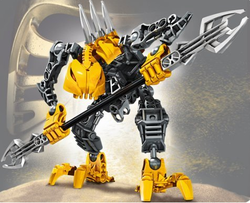

Karzahni, Sadra and Idris. Again a 2007 set, and certainly a big one, in fact the biggest I ever had. Obviously, this set had 3 characters in it, all designed with great detail, especially karzahni, being the biggest in the set. I always admired the design of Karzahni, especially the cloak on his back. This set has a lot of play features, wonderful choice of characters and amazing builds made this set to be perceived as one of the best by Bionicle community.
